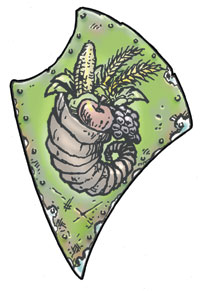
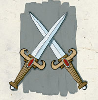
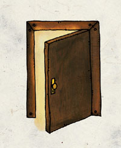
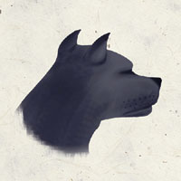
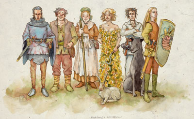

半身人神系 Halfling Pantheon
悠妲��女神统治着所有半身人的神�o，因此该神系也被称为「悠妲��之子」。
【强大神力 Greater Power】

悠妲�� Yondalla （半身人守护女神）
别称：保护者 The Protector，供给者 The Provider，哺养众生的女神 the Nurturing Matriarch，受福者 the Blessed One
圣徽：
居住界域：翠绿原野（半身人国度）Green Fields
阵营：守序善良 LG
神职：保护 Protection，收成 bounty，半身人 halfling，孩童 children，防护 security，领导才能 leadership，智慧 wisdom，创造 creation，家庭 family，传统 tradition
信徒：孩童，半身人，领导者，圣武士，双亲
牧师阵营：守序善良LG，中立善良 NG，守序中立 LN
神域：家庭 Family，善良 Good，半身人 Halfling，守序 Law，保护 Protection
喜好武器：角刃 Hornblade（短剑 short sword）
【中等神力 Intermediate Power】

阿尔伏林 Arvoreen （半身人的战神）
别称：防御者 The Defender，机警之剑 the Wary Sword
圣徽：两把交叉的短剑
居住界域：翠绿原野（半身人国度）Green Fields
阵营：守序善良 LG
神职：防御 Protection，战争 war，警惕 vigilance，半身人战士 halfling warriors，责任 duty
信徒：半身人，战士，圣武士，游侠，士兵
牧师阵营：守序善良LG，中立善良 NG，守序中立 LN
神域：善良 Good，半身人 Halfling，守序 Law，保护 Protection，战争 War
喜好武器：庇护之心 Aegisheart（短剑 short sword）

希劳拉妮 Cyrrollalee （半身人的友情女神）
别称：友情之手 The Hand of Fellowship，壁炉守卫 the Hearthkeeper
圣徽：半启的门
居住界域：翠绿原野（半身人国度）Green Fields
阵营：守序善良 LG
神职：友情 friendship，信任 trust，壁炉 the hearth，殷勤招待 hospitality，手艺 crafts
信徒：工匠，厨师，守卫，半身人，主人，旅店经营者
牧师阵营：守序善良LG，中立善良 NG，守序中立 LN
神域：家庭 Family，善良 Good，半身人 Halfling，守序 Law
喜好武器：迦玛瑞德之凿 Gamaradestave （木棒 club）
席拉�B佩莉萝尔 Sheela Peryroyl （半身人的自然与爱情女神）
别称：绿色姊妹 Green Sister，看护之母 Watchful Mother
圣徽：雏菊
居住界域：翠绿原野（半身人国度）Green Fields
阵营：绝对中立 N
神职：自然 nature，农业 agriculture，气候 weather，歌曲 song，舞蹈 dance，美丽 beauty，浪漫的爱情 romantic love
信徒：吟游诗人，德鲁伊，农夫，园丁，半身人，游侠
牧师阵营：中立善良 NG，守序中立 LN，绝对中立 N，混乱中立 CN，邪恶中立 NE
神域：风 Air，媚惑 Charm，半身人 Halfling，植物 Plant
喜好武器：橡树之刺 Oakthorn（镰刀 sickle）
【弱等神力 Lesser Power】
布兰多布李斯 Brandobaris （半身人的盗贼之神）
别称：潜行大师 Master of Stealth，无法无天的流氓 the Irrepressible Scamp
圣徽：半身人的足印
居住界域：翠绿原野（半身人国度）Green Fields
阵营：绝对中立 N
神职：潜行 stealth，窃盗 thievery，冒险 adventuring，半身人盗贼 halfling rouges
信徒：冒险者，吟游诗人，半身人，盗贼，赌徒
牧师阵营：中立善良 NG，守序中立 LN，绝对中立 N，混乱中立 CN，邪恶中立 NE
神域：半身人 Halfling，幸运 Luck，旅行 Travel，诡术 Trickery
喜好武器：脱逃 Escape（匕首dagger）
【微弱神力 Demigod】

尤拉格连恩 Urogalan （半身人的死神）
别称：无所不在者 He Who Must Be，大地之王 Lord of the Earth，黑色猎犬 the Black Hound
圣徽：狗头黑影
居住界域：翠绿原野（半身人国度）Green Fields
阵营：守序中立 LN
神职：土地 earth，死亡 death，守护死者 protection of the dead
信徒：系谱学者，挖墓者，半身人
牧师阵营：守序善良 LG，守序中立 LN，守序邪恶 LE
神域：土 Earth，半身人 Halfling，守序 Law，保护 Protection，长眠 Repose
喜好武器：毁灭采集者 Doomthresher（连枷 flail）
半身人众神群像

由左至右为 战神 阿尔伏林 [中等神力]
盗贼之神 布兰多布李斯 [弱等神力]
友善女神 希劳拉妮 [中等神力]
爱情女神 席拉�B佩莉萝尔 [中等神力]
长眠之神 尤拉格连恩 [微弱神力]
守护女神 悠妲�� [强大神力]